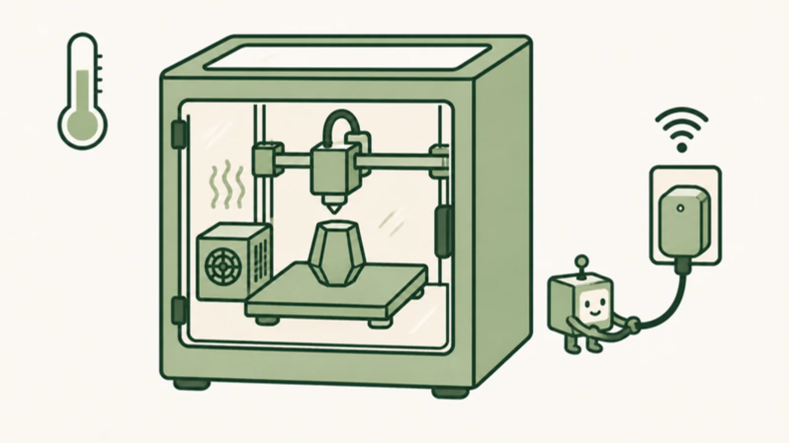

ASA wants a warm chamber. My Creality K1 Max has an enclosure, a chamber temperature sensor and a chamber fan, but no chamber heater. Left to the bed, the air warms up slowly. So I added a heater.

The heater was the easy part. The hard part was its start button, because my printer doesn't have fingers.
A heater with its own opinions
I use Creality's Chamber Heater, a standalone heater with a separate controller, which sits in a printed cradle (Squeemeister's remix on Printables). The controller has its own thermostat, but it goes by the heater's own sensor, which reads very differently from the printer's chamber sensor. The printer's sensor is the one my prints care about, so I wanted it in charge.
The heater stays on its max setting, and the printer decides when it runs. Turning it off is easy: it's plugged into a Shelly smart plug that Moonraker, Klipper's API server, can switch. Turning it on is not. When power comes back, the heater remembers its settings but waits in standby until someone presses start.
That someone is a Fingerbot, a small button-pushing gadget that connects through a Tuya hub. It pokes the start button with a little arm when asked.
One heater start, step by step
My K1 Max is rooted and runs Fluidd, so a Klipper macro can reach other things on my network through the G-Code Shell Command extension. The Fingerbot side is a small Python bridge on a Mac at home that talks to the hub on the local network.
- Print startsThe start G-code turns on Klipper's chamber thermostat.
- KlipperThe chamber is cold, so a shell command sends a signed request to the bridge.
- Bridge on a MacChecks the printer isn't paused, then turns the smart plug off for a second and back on.
- HeaterComes back in standby with its settings intact.
- FingerbotPresses start. The bridge reads its state back to confirm the press.
The power cycle is the important part. The start button toggles, so pressing it on a heater that's already running would turn it off. Cutting power first puts the heater in a known state, so one press always means start.
The bridge only accepts signed, timestamped requests, refuses a request it has already seen, runs one operation at a time, and isn't reachable from outside my network. It presses a real button on a heater, so I wanted it boring.
The printer is the thermostat
The first version, in September, was a preset button in Fluidd that started the heater and left the rest to the heater's own thermostat. In October I moved the thermostat into Klipper. A macro checks the printer's chamber sensor every 15 seconds. For ASA, with a 50 °C target:
- 65 °CToo hot: heater off, thermostat stops
- 51 °CHeater off at the smart plug
- 50 °CTarget
- 48.5 °CHeater on: power cycle, then press
- 44 °CWarm enough for the print to start
After switching off, it waits at least two minutes before starting the heater again. If the chamber hasn't warmed after five minutes on, it tries the press once more and warns me in the console. When the heater restarts mid-print, the bridge call runs in the background, so the toolhead never waits on it.
Stopping happens in a lot of places. END_PRINT and CANCEL_PRINT set the target to 0, and so does a print error. Fluidd's Heaters off button runs TURN_OFF_HEATERS, so I overrode that macro to stop the thermostat and cut the plug too, which also covers Klipper's idle timeout. If Klipper shuts down, Moonraker turns the plug off.
In a live test the plug drew about 550 W right after the press, settling to about 265 W, and dropped to 0 W when the thermostat switched it off. A start in the middle of a print had the heater running within about 12 seconds.
Each print opts in
Only prints that ask for heat get it. These are the relevant lines from the start G-code in my OrcaSlicer printer profile for ASA:
; Exhaust only above 58 C so the chamber fan doesn't fight the heater
M141 S58
; Hold the filament profile's chamber temperature (50 C for ASA)
CHAMBER_HEATER_START TARGET={chamber_temperature[initial_no_support_extruder]}
; Heat the bed now (no wait) so it helps warm the chamber
M140 S[bed_temperature_initial_layer_single]
; Keep the nozzle below where ASA oozes
M104 S160
; Wait for the chamber BEFORE START_PRINT
TEMPERATURE_WAIT SENSOR="temperature_sensor chamber_temp" MINIMUM=44
START_PRINT EXTRUDER_TEMP=... BED_TEMP=...The target comes from the filament profile's Chamber temperature field. Profiles that shouldn't heat the chamber leave the line out, so a PLA print never knows any of this exists.
The chamber wait sits before START_PRINT on purpose. During START_PRINT the K1 Max wipes its hot nozzle near the chamber sensor, which bumps the reading about 8 °C for around three minutes. A wait placed after that can pass while the chamber is still cold.
Things I learned the hard way
- Sending a command isn't pressing a button. In click mode, the Fingerbot presses when its switch value changes. My first version always sent "on", and when the Fingerbot already reported "on", nothing moved. Now the bridge reads the current value, sends the opposite, and checks the change on a fresh connection.
- The cloud can't see the arm. For about a day, when my hub stopped answering on the local network, I sent commands through Tuya's cloud. The reported switch value changed, but that didn't confirm the arm moved. When the hub answered locally again, I went back to local control.
- Never retry a press. If a reply gets lost, the press may still have happened, and a second press would turn the heater back off. On a failure the bridge cuts power and redoes the whole power cycle, once. The power cycle is what makes that retry safe.
Where it ended up
An ASA print now turns on its own heater, waits for a warm chamber, holds 50 °C on the printer's own sensor, and shuts everything off when it ends.
My printer still doesn't have fingers. It just borrows one.